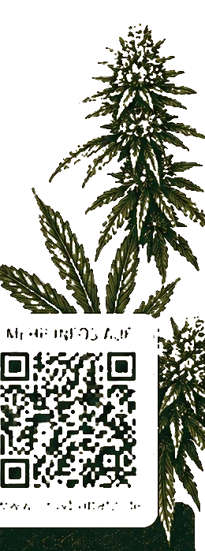

Andrees Wunsch „im Hintergrund ein paar Weedpflanzen wie Designimage.jpeg", direkt aus seinem Flyer extrahiert statt als Platzhalter-Kupferstich. Hintergrund weg, Alpha-Kante, zwei Fassungen: Originalfarben oder Marken-Tiefgrün.

Ehrlich zur Quelle: der Flyer liefert die Pflanze nur mit 260 × 699 px. Bei 92 vh (≈ 830 px) ist das eine Skalierung von 1,19× — bei 10 % Deckkraft unsichtbar. Für eine scharfe Pflanzen-Ebene bei voller Deckkraft (oder auf 2×-Displays) braucht es trotzdem ein eigenes Foto, so wie @fotograf es geplant hat; dann ersetzt dieselbe Datei den Freisteller ohne Code-Änderung.
Rechtlich/sauber: Motiv ist Andrees eigener Flyer, keine Fremdquelle. Der Freisteller ersetzt nur den Kupferstich-Platzhalter im Theme, nicht das Flyer-Bild als Seitenhintergrund.